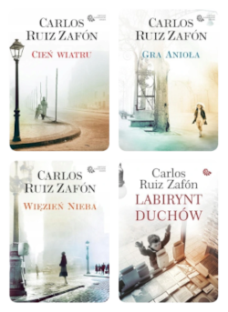

Moim ulubionym pisarzem jest Carlos Ruiz Zafon, autor popularnej serii Cmentarz Zapomnianych Książek.

Inne książki, które lubię:
- Psychoza Robert Bloch
- Wehikuł czasu Herbert G. Wells
- Schronisko Sam Lloyd
- Nasz imię Legion, nasze imię Bob Dennis E. Taylor
- Sen o okapi Mariana Leky